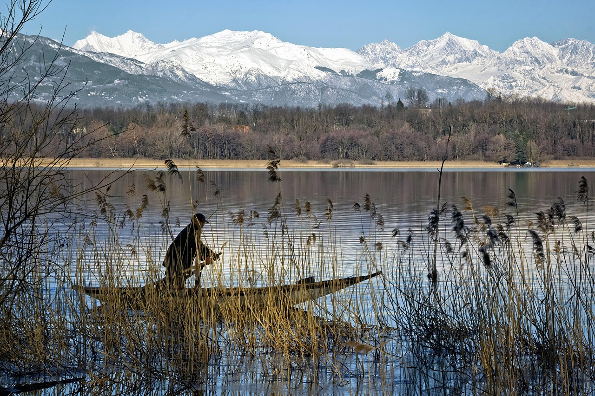

Esiintyjät
Leirintäkeskuksen pääsalissa on useina kesäiltoina erilaisia musiikki- tai tanssiesityksiä sekä ajoittain myös standup komiikkaa. Katso kesän 2026 esiintyjät tästä. (Avautuu osio, jossa lukee: “Kesän 2026 esiintyjät varmistuvat myöhemmin.”)
Venevuokraus
Soutuveneitä voi vuokrata päärakennukselta kesäkaudella hintaan 5 € tunti. Maksimiaika vuokraukselle on kuusi tuntia
Kylpyläosasto
Leirintäkeskuksen kylpyläosasto on auki vuoden ympäri. Kesällä käytössä on myös ulkoallas. Kylpyläosastolla on syvä uima-allas, kaksi poreallasta sekä yksi lasten allas liukumäkineen. Saunaosastolla on tavallinen sauna sekä höyrysauna. Hinta aikuiselta 12 €, opiskelijalta tai eläkeläiseltä 10 € ja kouluikäiseltä lapselta 6 €. Alle kouluikäiset uivat ilmaiseksi.
Opastetut luontoretket
Kesäaikaan joka lauantai on tarjolla opastettu luontoretki, jolle lähdetään kello 13 päärakennukselta. Reitti ei ole esteetön. Ei vaadi kovaa kuntoa. Hintaan sisältyy pienet eväät. Kesto noin kolme tuntia. Hinta 15 € aikuiselta, 12 € opiskelijalta tai eläkeläiseltä ja 8 € kouluikäiseltä lapselta. Alle kouluikäiset pääsevät mukaan ilmaiseksi. Voitte myös ehdottaa toimintaa ottamalla meihin yhteyttä, niin katsomme, voimmeko järjestää sen.
